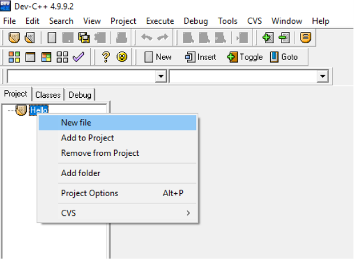
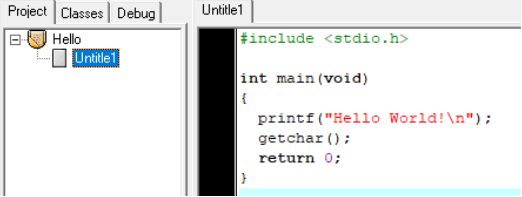
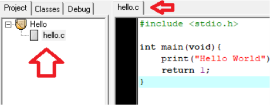
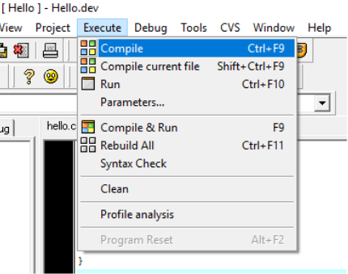
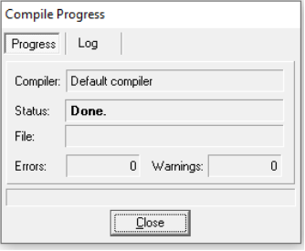

Bài 1: Các thành phần cơ bản trong ngôn ngữ C
Nội dung bài học
I. Bộ chữ viết, từ khóa, tên
I.1. Hệ thống ký hiệu
Mọi ngôn ngữ lập trình đều được xây dựng từ một bộ ký tự nào đó. Các ký tự được nhóm lại theo nhiều cách khác nhau để tạo nên các từ. Các từ lại được liên kết với nhau theo một qui tắc nào đó để tạo nên các câu lệnh. Một chương trình bao gồm nhiều câu lệnh và thể hiện một thuật toán để giải một bài toán nào đó. Ngôn ngữ C được xây dựng trên bộ ký tự sau :
- 26 chữ cái hoa : A B C .. Z
- 26 chữ cái thường : a b c .. z
- 10 chữ số : 0 1 2 .. 9
- Các ký hiệu toán học : + - * / = ( )
- Ký tự gạch nối : _
- Các ký tự khác : . , : ; [ ] {} ! \ & % # $ ...
- Dấu cách (space) dùng để tách các từ. Ví dụ chữ VIET NAM có 8 ký tự, còn VIETNAM chỉ có 7 ký tự.
Chú ý :
Khi viết chương trình, ta không được sử dụng bất kỳ ký tự nào khác ngoài các ký tự trên. Ví dụ như khi lập chương trình giải phương trình bậc hai ax2 +bx+c=0 , ta cần tính biệt thức Delta Δ= b2 - 4ac, trong ngôn ngữ C không cho phép dùng ký tự Δ, vì vậy ta phải dùng ký hiệu khác để thay thế.
I.2. Từ khóa
Từ khoá là những từ được sử dụng để khai báo các kiểu dữ liệu, để viết các toán tử và các câu lệnh. Bảng dưới đây liệt kê các từ khoá của C :
asm break case cdecl char const continue default do double else enum extern far float for goto huge if int interrupt long near pascal register return short signed sizeof static struct switch tipedef union unsigned void volatile while
Ý nghĩa và cách sử dụng của mỗi từ khoá sẽ được đề cập sau này, ở đây ta cần chú ý:
- Không được dùng các từ khoá để đặt tên cho các hằng, biến, mảng, hàm ...
- Từ khoá phải được viết bằng chữ thường, ví dụ : viết từ khoá khai báo kiểu nguyên là int chứ không phải là INT.
I.3. Tên
Tên là một khái niệm rất quan trọng, nó dùng để xác định các đại lượng khác nhau trong một chương trình. Chúng ta có tên hằng, tên biến, tên mảng, tên hàm, tên con trỏ, tên tệp, tên cấu trúc, tên nhãn,...
Tên được đặt theo qui tắc sau :
- Tên là một dãy các ký tự bao gồm chữ cái, số và gạch nối.
- Ký tự đầu tiên của tên phải là chữ hoặc gạch nối.
- Tên không được trùng với khoá.
- Độ dài cực đại của tên theo mặc định là 32 và có thể được đặt lại là một trong các giá trị từ 1 tới 32 nhờ chức năng : Option-Compiler-Source- Identifier length khi dùng TURBO C.
Ví dụ :
- Các tên đúng : a_1 delta x1 _step GAMA
- Các tên sai : 3MN Ký tự đầu tiên là số
- m#2 : Sử dụng ký tự #
- f(x) : Sử dụng các dấu () do Trùng với từ khoá
- te ta : Sử dụng dấu trắng
- Y-3 : Sử dụng dấu -
Chú ý :
Trong C, tên bằng chữ thường và chữ hoa là khác nhau ví dụ tên AB khác với ab. Ta thường dùng chữ hoa để đặt tên cho các hằng và dùng chữ thường để đặt tên cho hầu hết cho các đại lượng khác như biến, biến mảng, hàm, cấu trúc. Tuy nhiên đây không phải là điều bắt buộc.
II. Kiểu dữ liệu
Trong C sử dụng các các kiểu dữ liệu sau :
II.1. Kiểu ký tự
Một giá trị kiểu char chiếm 1 byte ( 8 bit ) và biểu diễn được một ký tự thông qua bảng mã ASCII.
Ví dụ :
| Ký tự | Mã ASCII |
|---|---|
| 0 | 048 |
| 1 | 049 |
| A | 065 |
| B | 066 |
| a | 097 |
| b | 098 |
Có hai kiểu dữ liệu char : kiểu signed char và unsigned char.
| Kiểu | Phạm vi biểu diễn | Số ký tự | Kích thước |
|---|---|---|---|
| char (signed char ) | -128 đến 127 | 256 | 1 byte |
| unsigned char | 0 đến 255 | 256 | 1 byte |
Ví dụ sau minh hoạ sự khác nhau giữa hai kiểu dữ liệu trên. Xét đoạn chương trình sau :
char ch1;
unsigned char ch2;
ch1=200;
ch2=200;
Khi đó thực chất: ch1=-56; ch2=200; Nhưng cả ch1 và ch2 đều biểu diễn cùng một ký tự có mã 200. ch1 và ch2 được gọi là các biến (variables) sẽ được tìm hiểu trong mục III bài này.
Phân loại ký tự :
Có thể chia 256 ký tự làm ba nhóm :
- Nhóm 1: Nhóm các ký tự điều khiển có mã từ 0 đến 31. Chẳng hạn ký tự mã 13 dùng để chuyển con trỏ về đầu dòng, ký tự 10 chuyển con trỏ xuống dòng dưới (trên cùng một cột). Các ký tự nhóm này nói chung không hiển thị ra màn hình.
- Nhóm 2 : Nhóm các ký tự văn bản có mã từ 32 đến 126. Các ký tự này có thể được đưa ra màn hình hoặc máy in.
- Nhóm 3 : Nhóm các ký tự đồ hoạ có mã số từ 127 đến 255. Các ký tự này có thể đưa ra màn hình nhưng không in ra được (bằng các lệnh DOS).
II.2. Kiểu số nguyên
Trong C cho phép sử dụng số nguyên kiểu int, số nguyên dài kiểu long và số nguyên không dấu kiểu unsigned. Kích cỡ và phạm vi biểu diễn của chúng được chỉ ra trong bảng dưới đây :
| Kiểu | Phạm vi biểu diễn | Kích thước |
|---|---|---|
| int | -32.768 đến 32.767 | 2 byte |
| unsigned int | 0 đến 65.535 | 2 byte |
| long | -2.147.483.648 đến 2.147.483.647 | 4 byte |
| unsigned long | 0 đến 4.294.967.295 | 4 byte |
Chú ý : Kiểu ký tự cũng có thể xem là một dạng của kiểu nguyên.
II.3. Kiểu số dấu chấm động
Trong C cho phép sử dụng ba loại dữ liệu dấu chấm động, đó là float, double và long double. Kích cỡ và phạm vi biểu diễn của chúng được chỉ ra trong bảng dưới đây :
| Kiểu | Phạm vi biểu diễn | Số chữ số có nghĩa | Kích thước |
|---|---|---|---|
| float | -3.4E-38 đến 3.4E+38 | 7 đến 8 | 4 byte |
| double | 1.7E-308 đến 1.7E+308 | 15 đến 16 | 8 byte |
| long double | 3.4E-4932 đến 1.1E4932 | 17 đến 18 | 10 byte |
Giải thích: Máy tính có thể lưu trữ được các số kiểu float có giá trị tuyệt đối từ 3.4E- 38 đến 3.4E+38. Các số có giá trị tuyệt đối nhỏ hơn 3.4E-38 được xem bằng 0. Phạm vi biểu diễn của số double được hiểu theo nghĩa tương tự.
III. Biến, hằng, biểu thức
III.1. Biến
Mỗi biến cần phải được khai báo trước khi đưa vào sử dụng. Việc khai báo biến được thực hiện theo cú pháp sau :
Kiểu dữ liệu của biến tên biến ;
Ví dụ :
- int a, b, c; // Khai báo ba biến int là a,b,c
- long dai, n; // Khai báo hai biến long là dai và n
- char kt1, kt2; // Khai báo hai biến ký tự là kt1 và kt2
- float x, y; // Khai báo hai biến float là x và y
- double canh1, canh2; // Khai báo hai biến double là canh1 và canh2
Biến kiểu int chỉ nhận được các giá trị kiểu int, các biến kiểu char chỉ chứa được một ký tự và các biến khác cũng có ý nghĩa tương tự. Để lưu trữ được một xâu ký tự cần sử dụng một mảng kiểu char.
Ví dụ:
a = 20;
x = 2.5;
kt1 = 'a';
Khởi tạo cho biến
Nếu trong khai báo ngay sau tên biến ta đặt dấu = và một giá trị nào đó thì đây chính là cách vừa khai báo vừa khởi tạo cho biến. Ví dụ:
int a = 20;
float e = -55.2;
Việc khởi tạo và việc khai báo biến rồi gán giá trị cho nó sau này là hoàn toàn tương đương.
Lấy địa chỉ của biến
Mỗi biến được cấp phát một vùng nhớ gồm một số byte liên tiếp. Số hiệu của byte đầu chính là địa chỉ của biến. Địa chỉ của biến sẽ được sử dụng trong một số hàm ta sẽ nghiên cứu sau này (ví dụ như hàm scanf).
Để lấy địa chỉ của một biến ta sử dụng phép toán : & tên biến
Ví dụ:
int a = 20;// khai báo và khởi tạo biến a
// Địa chỉ biến a là &a
III.2. Hằng
Hằng là các đại lượng mà giá trị của nó không thay đổi trong quá trình tính toán.
III.2.1. Tên hằng
Để đặt tên một hằng, ta dùng dòng lệnh sau :
#define tên hằng giá trị
Ví dụ:
#define MAX 1000
Lúc này, tất cả các tên MAX trong chương trình xuất hiện sau này đều được thay bằng 1000. Vì vậy, ta thường gọi MAX là tên hằng, nó biểu diễn số 1000.
Một ví dụ khác:
#define pi 3.141593
Đặt tên cho một hằng float là pi có giá trị là 3.141593.
III.2.2. Các loại hằng
Hằng int
Hằng int là số nguyên có giá trị trong khoảng từ -32.768 đến 32.767. Ví dụ :
#define number1 -50 // Định nghiã hằng int number1 có giá trị là -50
#define sodem 2732 // Định nghiã hằng int sodem có giá trị là 2732
Chú ý :
Cần phân biệt hai hằng 5056 và 5056.0 : ở đây 5056 là số nguyên còn 5056.0 là hằng thực.
Hằng long
Hằng long là số nguyên có giá trị trong khoảng từ -2.147.483.648 đến 2.147.483.647. Hằng long được viết theo cách : 1234L hoặc 1234l (thêm L hoặc l vào đuôi). Một số nguyên vượt ra ngoài miền xác định của int cũng được xem là long.
Ví dụ :
#define sl 8865056L // Định nghiã hằng long sl có giá trị là 8865056
#define sl 8865056 // Định nghiã hằng long sl có giá trị là 8865056
Hằng int hệ 8
Hằng int hệ 8 được viết theo cách 0c1c2c3. Ở đây ci là một số nguyên dương trong khoảng từ 1 đến 7. Hằng int hệ 8 luôn luôn nhận giá trị dương. Ví dụ :
#define h8 0345 // Định nghiã hằng int hệ 8 có giá trị là 3*8*8+4*8+5=229
Hằng int hệ 16
Trong hệ này ta sử dụng 16 ký tự : 0,1..,9,A,B,C,D,E,F.
Cách viết Giá trị
a hoặc A 10
b hoặc B 11
c hoặc C 12
d hoặc D 13
e hoặc E 14
f hoặc F 15
Hằng số hệ 16 có dạng 0xc1c2c3... hặc 0Xc1c2c3. Ở đây ci là một số trong hệ 16. Ví dụ :
#define h16 0xa5
#define h16 0xA5
#define h16 0Xa5
#define h16 0XA5
Cho ta các hằng số h16 trong hệ 16 có giá trị như nhau. Giá trị của chúng trong hệ 10 là : 10*16+5=165.
Hằng ký tự
Hằng ký tự là một ký tự riêng biệt được viết trong hai dấu nháy đơn, ví dụ 'a'. Giá trị của 'a' chính là mã ASCII của chữ a. Như vậy giá trị của 'a' là 97. Hằng ký tự có thể tham gia vào các phép toán như mọi số nguyên khác. Ví dụ : '9'-'0'=57- 48=9
Ví dụ :
#define kt 'a' // Định nghiã hằng ký tự kt có giá trị là 97
Hằng ký tự còn có thể được viết theo cách sau : ' \c1c2c3' trong đó c1c2c3 là một số hệ 8 mà giá trị của nó bằng mã ASCII của ký tự cần biểu diễn.
Ví dụ : chữ a có mã hệ 10 là 97, đổi ra hệ 8 là 0141. Vậy hằng ký tự 'a' có thể viết dưới dạng '\141'. Đối với một vài hằng ký tự đặc biệt ta cần sử dụng cách viết sau (thêm dấu \ )
Chú ý :
| Cách viết | Ký tự |
|---|---|
| '\'' | ' |
| '\"' | " |
| '\\' | \ |
| '\n' | \n (chuyển dòng) |
| '\0' | \0 ( null ) |
| '\t' | Tab |
| '\b' | Backspace |
| '\r' | CR ( về đầu dòng ) |
| '\f' | LF ( sang trang ) |
Cần phân biệt hằng ký tự '0' và '\0'. Hằng '0' ứng với chữ số 0 có mã ASCII là 48, còn hằng '\0' ứng với ký tự \0 ( thường gọi là ký tự null ) có mã ASCII là 0. Hằng ký tự thực sự là một số nguyên, vì vậy có thể dùng các số nguyên hệ 10 để biểu diễn các ký tự, ví dụ lệnh printf("%c%c",65,66) sẽ in ra AB.
Hằng xâu ký tự
Hằng xâu ký tự là một dãy ký tự bất kỳ đặt trong hai dấu nháy kép. Ví dụ :
#define xau1 "Ha noi"
#define xau2 "My name is Giang"
Xâu ký tự được lưu trữ trong máy dưới dạng một bảng có các phần tử là các ký tự riêng biệt. Trình biên dịch tự động thêm ký tự null \0 vào cuối mỗi xâu ( ký tự \0 được xem là dấu hiệu kết thúc của một xâu ký tự ). Chú ý : Cần phân biệt hai hằng 'a' và "a". 'a' là hằng ký tự được lưu trữ trong 1 byte, còn "a" là hằng xâu ký tự được lưu trữ trong 1 mảng hai phần tử : phần tử thứ nhất chứa chữ a còn phần tử thứ hai chứa \0.
III.3. Biểu thức
Biểu thức là một sự kết hợp giữa các phép toán (hay còn được gọi là toán tử) và các toán hạng để diễn đạt một công thức toán học nào đó. Mỗi biểu thức có sẽ có một giá trị. Như vậy hằng, biến, phần tử mảng và hàm cũng được xem là biểu thức.
Trong C, ta có hai khái niệm về biểu thức:
- Biểu thức gán.
- Biểu thức điều kiện.
Biểu thức thường được dùng trong:
- Vế phải của câu lệnh gán.
- Làm tham số thực sự của hàm.
- Làm chỉ số.
- Trong các toán tử của các cấu trúc điều khiển.
Trong các mệnh đề logic, biểu thức được phân thành đúng (giá trị khác 0) và sai (giá trị bằng 0). Đây là các biểu thức điều kiện.
Biểu thức gán là biểu thức có dạng: v = e
Trong đó v là một biến (hay phần tử mảng), e là một biểu thức. Giá trị của biểu thức gán là giá trị của e, kiểu của nó là kiểu của v. Nếu đặt dấu ; vào sau biểu thức gán ta sẽ thu được phép toán gán có dạng: v = e;
Biểu thức gán có thể sử dụng trong các phép toán và các câu lệnh như các biểu thức khác. Ví dụ như khi ta viết a = b = 5; thì điều đó có nghĩa là gán giá trị của biểu thức b = 5 cho biến a. Kết quả là b=5 và a = 5.
Hoàn toàn tương tự như:
a = b = c = d = 6; gán 6 cho cả a, b, c và d
z = (y = 2)*(x = 6); ở đây
gán 2 cho y, 6 cho x và nhân hai biểu thức lại cho ta z = 12.
Tới đây, ta đã có hai khái niệm chính tạo nên biểu thức đó là toán hạng và phép toán. Sau đây chúng ta sẽ đề cập đến các phép toán hay còn gọi là toán tử.
IV. Các phép toán
IV.1. Phép toán số học
C hỗ trợ các phép toán hai ngôi số học sau đây:
| Phép toán | Ý nghĩa | Ví dụ |
|---|---|---|
| + | Phép cộng | a + b |
| - | Phép trừ | a - b |
| * | Phép nhân | a * b |
| / | Phép chia | a / b (Chia số nguyên sẽ bỏ phần thập phân) |
| % | Phép lấy phần dư | a % b (Cho phần dư của phép chia a cho b) |
Có phép toán một ngôi - ví du -(a+b) sẽ đảo giá trị của phép cộng (a+b). Ví dụ :
11/3=3
11%3=2
-(2+6)=-8
Các phép toán + và - có cùng thứ tự ưu tiên, có thứ tự ưu tiên nhỏ hơn các phép * , / , % và cả ba phép này lại có thứ tự ưu tiên nhỏ hơn phép trừ một ngôi. Các phép toán số học được thực hiện từ trái sang phải. Số ưu tiên và khả năng kết hợp của phép toán được chỉ ra trong một mục sau này.
IV.2. Phép toán quan hệ và logic
Phép toán quan hệ và logic cho ta giá trị đúng ( 1 ) hoặc giá trị sai ( 0 ). Nói cách khác, khi các điều kiện nêu ra là đúng thì ta nhận được giá trị 1, trái lại ta nhận giá trị 0.
Các phép toán quan hệ
| Phép toán | Ý nghĩa | Ví dụ |
|---|---|---|
| > | So sánh lớn hơn | a > b (4 > 5 có giá trị 0) |
| >= | So sánh lớn hơn hoặc bằng | a >= b (6 >= 2 có giá trị 1) |
| < | So sánh nhỏ hơn | a < b (6 < 7 có giá trị 1) |
| <= | So sánh nhỏ hơn hoặc bằng | a <= b (8 <= 5 có giá trị 0) |
| == | So sánh bằng nhau | a == b (6 == 6 có giá trị 1) |
| != | So sánh khác nhau | a != b (9 != 9 có giá trị 0) |
Bốn phép toán đầu có cùng số ưu tiên, hai phép sau có cùng số thứ tự ưu tiên nhưng thấp hơn số thứ tự của bốn phép đầu.
Các phép toán quan hệ có số thứ tự ưu tiên thấp hơn so với các phép toán số học, cho nên biểu thức : i < n-1 được hiểu là i < (n-1).
Các phép toán logic
Trong C sử dụng ba phép toán logic:
- Phép phủ định một ngôi !
- Phép và (AND) &&
- Phép hoặc ( OR ) ||
Các phép quan hệ có số ưu tiên nhỏ hơn so với ! nhưng lớn hơn so với && và ||, vì vậy biểu thức như: (a < b) && (c > d) có thể viết lại thành: a < b && c > d
Chú ý: Cả a và b có thể là nguyên hoặc thực.
IV.3. Chuyển đổi kiểu giá trị
Việc chuyển đổi kiểu giá trị thường diễn ra một cách tự động trong hai trường hợp sau :
- Khi gán biểu thức gồm các toán hạng khác kiểu.
- Khi gán một giá trị kiểu này cho một biến ( hoặc phần tử mảng ) kiểu khác. Điều này xảy ra trong toán tử gán, trong việc truyền giá trị các tham số thực sự cho các đối. Ngoài ra, ta có thể chuyển từ một kiểu giá trị sang một kiểu bất kỳ mà ta muốn bằng phép chuyển sau:
(type) biểu thức
Ví dụ: (float) (a+b)
Chuyển đổi kiểu trong biểu thức:
Khi hai toán hạng trong một phép toán có kiểu khác nhau thì kiểu thấp hơn sẽ được nâng thành kiểu cao hơn trước khi thực hiện phép toán. Kết quả thu được là một giá trị kiểu cao hơn. Chẳng hạn : Giữa int và long thì int chuyển thành long. Giữa int và float thì int chuyển thành float. Giữa float và double thì float chuyển thành double.
Ví dụ :
1.5*(11/3) = 4.5
1.5*11/3 = 5.5
(11/3)*1.5 = 4.5
Chuyển đổi kiểu thông qua phép gán:
Giá trị của vế phải được chuyển sang kiểu vế trái đó là kiểu của kết quả. Kiểu int có thể được được chuyển thành float. Kiểu float có thể chuyển thành int do chặt đi phần thập phân. Kiểu double chuyển thành float bằng cách làm tròn. Kiểu long được chuyển thành int bằng cách cắt bỏ một vài chữ số.
Ví dụ:
int n;
n = 15.6; // giá trị của n là 15
Đổi kiểu dạng (type)biểu thức:
Theo cách này, kiểu của biểu thức được đổi thành kiểu type theo nguyên tắc trên.
Ví dụ:
Phép toán : (int)a cho một giá trị kiểu int. Nếu a là float thì ở đây có sự chuyển đổi từ float sang int. Chú ý rằng bản thân kiểu của a vẫn không bị thay đổi. Nói cách khác, a vẫn có kiểu float nhưng (int)a có kiểu int.
Đối với hàm toán học của thư viện chuẩn, thì giá trị của đối và giá trị của hàm đều có kiểu double, vì vậy để tính căn bậc hai của một biến nguyên n ta phải dùng phép ép kiểu để chuyển kiểu int sang double như sau : sqrt((double)n)
Phép ép kiểu có cùng số ưu tiên như các toán tử một ngôi.
Chú ý : Muốn có giá trị chính xác trong phép chia hai số nguyên cần dùng phép ép kiểu: ((float)a)/b Để đổi giá trị thực r sang nguyên, ta dùng: (int)(r+0.5)
Chú ý thứ tự ưu tiên : (int)1.4*10=1*10=10 (int)(1.4*10)=(int)14.0=14
IV.4. Phép toán tăng giảm
C đưa ra hai phép toán một ngôi để tăng và giảm các biến ( nguyên và thực ). Toán tử tăng là ++ sẽ cộng 1 vào toán hạng của nó, toán tử giảm -- thì sẽ trừ toán hạng đi 1.
Ví dụ: n = 5
++n Cho ta n = 6
--n Cho ta n = 4
Ta có thể viết phép toán ++ và -- trước hoặc sau toán hạng như sau : ++n, n++, --n, n--. Sự khác nhau của ++n và n++ ở chỗ: trong phép n++ thì tăng sau khi giá trị của nó đã được sử dụng, còn trong phép ++n thì n được tăng trước khi sử dụng. Sự khác nhau giữa n-- và --n cũng như vậy.
Ví dụ: n = 5
x = ++n Cho ta x = 6 và n = 6
x = n++ Cho ta x = 5 và n = 6
V. Ghi chú (comment)
Dùng để giảng giải mã C, làm cho nó dễ đọc hơn. Ngoài ra, có thể dùng ghi chú trong quá trình sửa lỗi chương trình. Các dòng chú thích không được thực thi.
C hỗ trợ hai kiểu ghi chú là ghi chú một dòng và ghi chú nhiều dòng.
Chú thích một dòng (single line comment) kí hiệu bằng dấu //, ví dụ:
Ví dụ:
// Đây là dòng ghi chú
printf("Day la mot lenh\n");
Chú thích nhiều dòng (multi-line comment) kí hiệu bằng dấu /*...*/, ví dụ:
Ví dụ:
/*
Đây là dòng ghi chú thứ nhất
Đây là dòng ghi chú thứ hai
*/
printf("Day la mot lenh\n");
VI. Cấu trúc một chương trình C
Để hình dung về cấu trúc một chương trình C, chúng ta xem ví dụ chương trình hiển thị ra mành hình máy tính dòng chữ Hello, World! như sau:
#include <stdio.h>
int main()
{
/* Day la chuong trinh C dau tien */
printf("Hello, World! \n");
return 0;
}
Các thành phần của chương trình gồm:
- Dòng đầu tiên của chương trình #include <stdio.h> là lệnh tiền xử lý, nhắc nhở bộ biên dịch C thêm tệp stdio.h trước khi biên dịch.
- Dòng tiếp theo int main() là hàm main, nơi chương trình bắt đầu.
- Dòng kế tiếp là dấu { để bắt đầu chương trình.
- Dòng tiếp theo /*...*/ là ghi chú được bỏ qua bởi bộ biên dịch compiler.
- Dòng tiếp theo printf(...) là một hàm chức năng khác của ngôn ngữ C , in ra thông điệp "Hello, World!" hiển thị trên màn hình.
- Dòng tiếp theo return 0; kết thúc hàm main và trả về giá trị 0.
- Dòng cuối cùng là dấu } để kết thúc chương trình.
VI.1. Viết chương trình C đầu tiên trong Dev-C++
Sau khi tạo dự án mới (Xem lại Bài mở đầu), bước kế tiếp là thêm tập tin mã nguồn đến dự án bằng cách nhấn chuột phải vào tên dự án (ví dụ Hello) ở khung bên trái chọn New file:
Một tập tin được thêm đến dự án với tên mặc định là Untitle1. Gõ chương trình C vào khung bên phải, chứa nội dung của tập tin vừa thêm vào dự án:
Vào mục File chọn Save để lưu tập tin. Nhập tên tập tin (ví dụ hello) trong mục File name, chọn vị trí lưu trong mục Save in (mặc định là vị trí lưu dự án chúng ta đã chọn ở bước trên) và nhấn Save:

Lúc này tập tin Untitle1 đã chuyển thành tên tập tin chúng ta vừa lưu (hello.c)
Trước khi thực hiện bước kế tiếp, tìm đến ổ đĩa cài Dec-C++ (giả sử ổ D) và tìm đến D:\Dev-Cpp\libexec\gcc\mingw32\3.4.2 xóa tập tin collect2.exe
Sau khi đã tạo tập tin mã nguồn C (hello.c), bước kế tiếp là biên dịch tập tin mã nguồn này bằng cách vào mục Execute chọn Compile
Hộp thoại thể hiện tiến trình biên dịch Compile Progress xuất hiện và chúng ta chờ cho đến khi quá trình biên dịch hoàn tất. Quá trình biên dịch sẽ hoàn tất khi trong mục Status xuất hiện chữ Done. Lúc này nhấn Close
Sau khi biên dịch thành công, bước cuối là thực thi chương trình bằng cách vào Execute chọn Run.
VI.2. Chương trình C đầu tiên trong JDoodle
Nhấn nút Execute để xem kết quả.
☛ Bài tập:
- Nhấn dòng liên kết Edit this program in
JDoodle.com để truy cập trang chủ JDoodle.
- Thay đổi nội dung chương trình C xuất rà màn hình dòng chữ Xin chào các bạn!
- Lưu đến tài
khoản cá
nhân trên JDoodle.